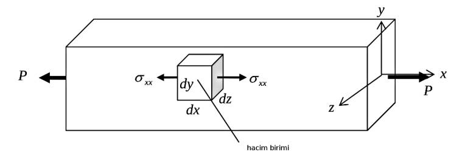

Materyel Mekaniği - 1
Kesme Kuvveti ve Dağıtık Yük
Bir kiriş üzerindeki kuvvetleri anlamak için onun ufak bir parçasına odaklanalım. Bu parçanın boyutları sonsuz küçük, eni $\mathrm{d} x$ büyüklüğünde, ve $M$ ile $V$'ye bakarken yatay olarak $\mathrm{d} M$ ve $\mathrm{d} V$ noktalarındaki moment ve kesmeye / teğetlemeye bakıyoruz.

Bu ufak parçanın üzerindeki kuvvetler görülüyor, üstte dağıtık (distributed) bir yük var, bu bir kesme etkisi $V$ yaratır, ayrıca bükülme momentleri de mevcuttur. İşaret notasyonu olarak yükler aşağı ise pozitif, moment için saat yönü tersi pozitif, saat yönü negatif.
Şimdi ilk önce dikey yöndeki kuvvetlere bakalım, burada yük, ve kesme kuvvetleri var. Üstteki figürde görülen yatay yöndeki tüm kuvvetlerin toplamı denge gerekliliği sebebiyle sıfır olmalıdır [6, sf. 321].
$$ \sum_{dik} = 0, \quad V - q \mathrm{d} x - (V + \mathrm{d} V) = 0 $$
Yani
$$ \frac{\mathrm{d} V}{\mathrm{d} x} = -q \qquad (3) $$
Böylece kirişin üzerindeki dağıtık yük ile aynı kiriş üzerindeki kesme kuvveti arasında bir ilişkiyi ortaya çıkarmış oldum.
Bükülme Momenti
Momentler için de bir denge formülü ortaya çıkartabilirim. Moment hesabı için bir nokta seçilmeli, ufak parçanın sağ noktasını baz alıyorum (resimde işaretli),

Referans nokta gerekli çünkü hatırlarsak moment bir nokta etrafındaki döndürmeye bağlıdır, kuvvet dönüş çapına teğet olan kuvvettir. O zaman
$$ \sum M_{X} = -M + \left( M + \frac{\mathrm{d} M}{\mathrm{d} X} \mathrm{d} X \right) - V \mathrm{d} X - q \mathrm{d} X \left( \frac{\mathrm{d} X}{2} \right) = 0 $$
Formüldeki $\mathrm{d} X / 2$ nereden çıktı? Moment için bir kuvvet uygulama uzaklığı lazım, uzaklık için de tek bir noktayı seçmek gerekli; bu sebeple $q$'nun etki ettiği bölgedeki kuvveti tek bir noktaya yapılıyormuş gibi farzediyoruz, o bölgenin tam ortasına, yani $- \mathrm{d} X / 2$ noktasına. Kuvvet büyüklüğü için o tüm alana etki eden kuvveti bulmak lazım, $q \mathrm{d} X$.
Devam edelim, $M$ terimleri iptal olur, kalanları tekrar düzenleriz,
$$ V \mathrm{d} X + \frac{q}{2} \mathrm{d} X^2 = \frac{\mathrm{d} M}{\mathrm{d} X} \mathrm{d} X $$
Eşitliğin her yerini $\mathrm{d} X$'e bölelim,
$$ V + \frac{q}{2} \mathrm{d} X = \frac{\mathrm{d} M}{\mathrm{d} X} $$
$\mathrm{d} X \to 0$ iken limiti alırsak, eşitliğin solundaki ikinci terim yokolur,
$$ V = \frac{\mathrm{d} M}{\mathrm{d} X} \qquad (4) $$
Böylece bir eşitlik daha elde ettim, teğetsel / kesme kuvveti $X$'e göre momentteki değişim oranına eşit. Bir önceki eşitlik yük ve kesme, bu eşitlik kesme ve moment arasında idi. Bu ilişkiler Statik (Statics) dersinden geliyor, onları bulmak kolaydı.
Kirişin Yatay Kesme Stresi
Kesme stresi $\tau$'yu bulmak için yine kirişin ufak bir kısmına odaklanalım,

Tüm etki eden kuvvetlerin toplamı sıfır olmak zorundadır [2],
$$ -P + (P + \mathrm{d} P) + \tau b \mathrm{d} x = 0 $$
$$ -\mathrm{d} P/\mathrm{d} x = \tau b \qquad (1) $$

$P$'yi bulmak için $A$ bölgesindeki stresleri entegre ediyoruz,
$$ \int_A \mathrm{d} P = \int_A \sigma_b \mathrm{d} A $$
Fakat daha önce bulduk ki $\sigma_b = -My / I$, yerine koyunca,
$$ P = \int_A - \frac{My}{I} \mathrm{d} A $$
$M$ ve $I$ sabittir, entegral dışına çıkartılabilir,
$$ P = - \frac{M}{I} \int_A y \mathrm{d} A = - \frac{MQ}{I} $$
Üstte bulunan $P$'yi (4)'e sokunca,
$$ - \frac{\mathrm{d}}{\mathrm{d} x} \left( - \frac{MQ}{I} \right) = \tau b $$
$$ \frac{Q}{I} \frac{\mathrm{d} M}{\mathrm{d} x} = \tau b $$
Şimdi hatırlarsak $\mathrm{d} M/\mathrm{d} x$ türevi yatay kesme / teğetsel yükü $V$'ye eşittir. O zaman
$$ \frac{Q}{I} V = \tau b $$
Nihai yatay kesme stres denklemi,
$$ \tau = \frac{V Q}{I b} $$
Kaynaklar
[2] Gramoll, Mechanics, http://www.ecourses.ou.edu/cgi-bin/ebook.cgi?topic=me
[6] Gere, Mechanics of Materials
Yukarı